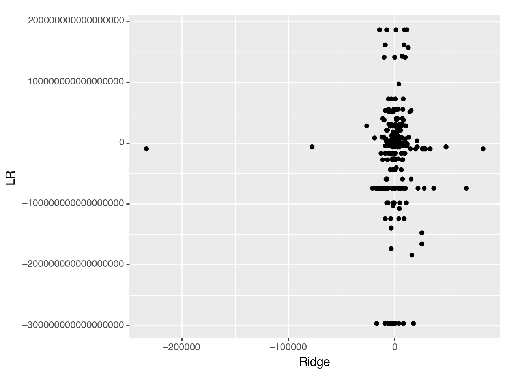

import pandas as pd
import numpy as np
from sklearn.pipeline import Pipeline
from sklearn.compose import make_column_selector, ColumnTransformer
from sklearn.preprocessing import StandardScaler, OneHotEncoder, PolynomialFeatures
from sklearn.linear_model import LinearRegression, Ridge, Lasso, ElasticNet
from sklearn.model_selection import train_test_split, cross_val_score
from sklearn.metrics import r2_scorePart 1
ames = pd.read_csv("/Users/AustinLiu/Desktop/GSB544-ComputingandMachineLearning/In-Class-Data/AmesHousing.csv")
ames.head()| Order | PID | MS SubClass | MS Zoning | Lot Frontage | Lot Area | Street | Alley | Lot Shape | Land Contour | ... | Pool Area | Pool QC | Fence | Misc Feature | Misc Val | Mo Sold | Yr Sold | Sale Type | Sale Condition | SalePrice | |
|---|---|---|---|---|---|---|---|---|---|---|---|---|---|---|---|---|---|---|---|---|---|
| 0 | 1 | 526301100 | 20 | RL | 141.0 | 31770 | Pave | NaN | IR1 | Lvl | ... | 0 | NaN | NaN | NaN | 0 | 5 | 2010 | WD | Normal | 215000 |
| 1 | 2 | 526350040 | 20 | RH | 80.0 | 11622 | Pave | NaN | Reg | Lvl | ... | 0 | NaN | MnPrv | NaN | 0 | 6 | 2010 | WD | Normal | 105000 |
| 2 | 3 | 526351010 | 20 | RL | 81.0 | 14267 | Pave | NaN | IR1 | Lvl | ... | 0 | NaN | NaN | Gar2 | 12500 | 6 | 2010 | WD | Normal | 172000 |
| 3 | 4 | 526353030 | 20 | RL | 93.0 | 11160 | Pave | NaN | Reg | Lvl | ... | 0 | NaN | NaN | NaN | 0 | 4 | 2010 | WD | Normal | 244000 |
| 4 | 5 | 527105010 | 60 | RL | 74.0 | 13830 | Pave | NaN | IR1 | Lvl | ... | 0 | NaN | MnPrv | NaN | 0 | 3 | 2010 | WD | Normal | 189900 |
5 rows × 82 columns
# Get rid of columns with mostly NaN values
good_cols = ames.isna().sum() < 100
ames = ames.loc[:,good_cols]
# Drop other NAs
ames = ames.dropna()X = ames.drop(["SalePrice", "Order", "PID"], axis = 1)
y = ames["SalePrice"]
ct = ColumnTransformer(
[
("dummify",
OneHotEncoder(sparse_output = False, handle_unknown='ignore'),
make_column_selector(dtype_include=object)),
("standardize",
StandardScaler(),
make_column_selector(dtype_include=np.number))
],
remainder = "passthrough"
)
lr_pipeline_1 = Pipeline(
[("preprocessing", ct),
("linear_regression", LinearRegression())]
)We drop the columns Order and PID because we dont want these as predictors. Labeling or ID column does not add to the analysis.
Handle_unknown: When we have categorical variables with rare categories. When we split test and train, there is a chance that they all end up in train or test.
cross_val_score(lr_pipeline_1, X, y, cv = 5, scoring = 'r2')array([-9.99458619e+19, -2.83178235e+20, -4.53259644e+21, -4.29881496e+21,
-8.52122515e+22])ridge_pipeline = Pipeline(
[("preprocessing", ct),
("ridge_regression", Ridge(alpha = 1))]
)
cross_val_score(ridge_pipeline, X, y, cv = 5, scoring = "r2")array([0.8983804 , 0.91749817, 0.79251623, 0.78248152, 0.91492025])ridge_pipeline_fitted = ridge_pipeline.fit(X, y)
y_pred = ridge_pipeline_fitted.predict(X)
ridgecoef = ridge_pipeline_fitted.named_steps['ridge_regression'].coef_lr_fitted = lr_pipeline_1.fit(X, y)
Y_pred_lr = lr_fitted.predict(X)
lrcoef =lr_fitted.named_steps['linear_regression'].coef_plotdata = pd.DataFrame({"Ridge":ridgecoef, "LR":lrcoef})
plotdata| Ridge | LR | |
|---|---|---|
| 0 | -5740.055372 | 5.511873e+16 |
| 1 | 1511.928887 | 5.511873e+16 |
| 2 | -5809.704488 | 5.511873e+16 |
| 3 | 7676.327583 | 5.511873e+16 |
| 4 | 3215.393618 | 5.511873e+16 |
| ... | ... | ... |
| 254 | 2937.762099 | 2.651500e+03 |
| 255 | 1377.194605 | 2.720000e+03 |
| 256 | -4485.971545 | -5.264000e+03 |
| 257 | -674.189275 | -7.360000e+02 |
| 258 | -905.496080 | -6.320000e+02 |
259 rows × 2 columns
from plotnine import *
(ggplot(plotdata, aes(x = "Ridge", y = "LR"))
+ geom_point())
#+ coord_cartesian(xlim = (-25000, 25000), ylim = (-10000, 10000)))
<Figure Size: (640 x 480)>Part 2
from sklearn.model_selection import GridSearchCV
#Part in the Pipeline and the parameter of interest
ridge_pipeline = Pipeline(
[("preprocessing", ct),
("ridgeregression", Ridge())]
)
lambdas = {"ridgeregression__alpha": [0.001, 0.01, 0.1, 1, 10]}
gscv = GridSearchCV(ridge_pipeline, lambdas, cv = 5, scoring='r2')gscv_fitted = gscv.fit(X, y)
pd.DataFrame(data = {"alpha": [0.001, 0.01, 0.1, 1, 10], "scores": gscv_fitted.cv_results_["mean_test_score"]})| alpha | scores | |
|---|---|---|
| 0 | 0.001 | 0.852945 |
| 1 | 0.010 | 0.853224 |
| 2 | 0.100 | 0.855423 |
| 3 | 1.000 | 0.861159 |
| 4 | 10.000 | 0.863355 |
Part 3
lasso_pipeline = Pipeline(
[("preprocessing", ct),
("lasso", Lasso())]
)
alphas = {"lasso__alpha": [0, 0.001, 0.01, 0.1, 1]}
gscv1 = GridSearchCV(lasso_pipeline, alphas, cv = 5, scoring = "r2")gscv1_fitted = gscv1.fit(X, y)
pd.DataFrame(data = {"alpha": [0, 0.001, 0.01, 0.1, 1], "scores": gscv1_fitted.cv_results_["mean_test_score"]})/Users/AustinLiu/anaconda3/lib/python3.11/site-packages/sklearn/base.py:1151: UserWarning: With alpha=0, this algorithm does not converge well. You are advised to use the LinearRegression estimator
/Users/AustinLiu/anaconda3/lib/python3.11/site-packages/sklearn/linear_model/_coordinate_descent.py:628: UserWarning: Coordinate descent with no regularization may lead to unexpected results and is discouraged.
/Users/AustinLiu/anaconda3/lib/python3.11/site-packages/sklearn/linear_model/_coordinate_descent.py:628: ConvergenceWarning: Objective did not converge. You might want to increase the number of iterations, check the scale of the features or consider increasing regularisation. Duality gap: 5.191e+11, tolerance: 1.348e+09 Linear regression models with null weight for the l1 regularization term are more efficiently fitted using one of the solvers implemented in sklearn.linear_model.Ridge/RidgeCV instead.
/Users/AustinLiu/anaconda3/lib/python3.11/site-packages/sklearn/base.py:1151: UserWarning: With alpha=0, this algorithm does not converge well. You are advised to use the LinearRegression estimator
/Users/AustinLiu/anaconda3/lib/python3.11/site-packages/sklearn/linear_model/_coordinate_descent.py:628: UserWarning: Coordinate descent with no regularization may lead to unexpected results and is discouraged.
/Users/AustinLiu/anaconda3/lib/python3.11/site-packages/sklearn/linear_model/_coordinate_descent.py:628: ConvergenceWarning: Objective did not converge. You might want to increase the number of iterations, check the scale of the features or consider increasing regularisation. Duality gap: 5.887e+11, tolerance: 1.474e+09 Linear regression models with null weight for the l1 regularization term are more efficiently fitted using one of the solvers implemented in sklearn.linear_model.Ridge/RidgeCV instead.
/Users/AustinLiu/anaconda3/lib/python3.11/site-packages/sklearn/base.py:1151: UserWarning: With alpha=0, this algorithm does not converge well. You are advised to use the LinearRegression estimator
/Users/AustinLiu/anaconda3/lib/python3.11/site-packages/sklearn/linear_model/_coordinate_descent.py:628: UserWarning: Coordinate descent with no regularization may lead to unexpected results and is discouraged.
/Users/AustinLiu/anaconda3/lib/python3.11/site-packages/sklearn/linear_model/_coordinate_descent.py:628: ConvergenceWarning: Objective did not converge. You might want to increase the number of iterations, check the scale of the features or consider increasing regularisation. Duality gap: 5.695e+11, tolerance: 1.463e+09 Linear regression models with null weight for the l1 regularization term are more efficiently fitted using one of the solvers implemented in sklearn.linear_model.Ridge/RidgeCV instead.
/Users/AustinLiu/anaconda3/lib/python3.11/site-packages/sklearn/base.py:1151: UserWarning: With alpha=0, this algorithm does not converge well. You are advised to use the LinearRegression estimator
/Users/AustinLiu/anaconda3/lib/python3.11/site-packages/sklearn/linear_model/_coordinate_descent.py:628: UserWarning: Coordinate descent with no regularization may lead to unexpected results and is discouraged.
/Users/AustinLiu/anaconda3/lib/python3.11/site-packages/sklearn/linear_model/_coordinate_descent.py:628: ConvergenceWarning: Objective did not converge. You might want to increase the number of iterations, check the scale of the features or consider increasing regularisation. Duality gap: 4.078e+11, tolerance: 1.407e+09 Linear regression models with null weight for the l1 regularization term are more efficiently fitted using one of the solvers implemented in sklearn.linear_model.Ridge/RidgeCV instead.
/Users/AustinLiu/anaconda3/lib/python3.11/site-packages/sklearn/base.py:1151: UserWarning: With alpha=0, this algorithm does not converge well. You are advised to use the LinearRegression estimator
/Users/AustinLiu/anaconda3/lib/python3.11/site-packages/sklearn/linear_model/_coordinate_descent.py:628: UserWarning: Coordinate descent with no regularization may lead to unexpected results and is discouraged.
/Users/AustinLiu/anaconda3/lib/python3.11/site-packages/sklearn/linear_model/_coordinate_descent.py:628: ConvergenceWarning: Objective did not converge. You might want to increase the number of iterations, check the scale of the features or consider increasing regularisation. Duality gap: 5.915e+11, tolerance: 1.477e+09 Linear regression models with null weight for the l1 regularization term are more efficiently fitted using one of the solvers implemented in sklearn.linear_model.Ridge/RidgeCV instead.
/Users/AustinLiu/anaconda3/lib/python3.11/site-packages/sklearn/linear_model/_coordinate_descent.py:628: ConvergenceWarning: Objective did not converge. You might want to increase the number of iterations, check the scale of the features or consider increasing regularisation. Duality gap: 2.103e+11, tolerance: 1.348e+09
/Users/AustinLiu/anaconda3/lib/python3.11/site-packages/sklearn/linear_model/_coordinate_descent.py:628: ConvergenceWarning: Objective did not converge. You might want to increase the number of iterations, check the scale of the features or consider increasing regularisation. Duality gap: 3.098e+11, tolerance: 1.474e+09
/Users/AustinLiu/anaconda3/lib/python3.11/site-packages/sklearn/linear_model/_coordinate_descent.py:628: ConvergenceWarning: Objective did not converge. You might want to increase the number of iterations, check the scale of the features or consider increasing regularisation. Duality gap: 1.871e+11, tolerance: 1.463e+09
/Users/AustinLiu/anaconda3/lib/python3.11/site-packages/sklearn/linear_model/_coordinate_descent.py:628: ConvergenceWarning: Objective did not converge. You might want to increase the number of iterations, check the scale of the features or consider increasing regularisation. Duality gap: 1.734e+11, tolerance: 1.407e+09
/Users/AustinLiu/anaconda3/lib/python3.11/site-packages/sklearn/linear_model/_coordinate_descent.py:628: ConvergenceWarning: Objective did not converge. You might want to increase the number of iterations, check the scale of the features or consider increasing regularisation. Duality gap: 2.553e+11, tolerance: 1.477e+09
/Users/AustinLiu/anaconda3/lib/python3.11/site-packages/sklearn/linear_model/_coordinate_descent.py:628: ConvergenceWarning: Objective did not converge. You might want to increase the number of iterations, check the scale of the features or consider increasing regularisation. Duality gap: 2.104e+11, tolerance: 1.348e+09
/Users/AustinLiu/anaconda3/lib/python3.11/site-packages/sklearn/linear_model/_coordinate_descent.py:628: ConvergenceWarning: Objective did not converge. You might want to increase the number of iterations, check the scale of the features or consider increasing regularisation. Duality gap: 3.099e+11, tolerance: 1.474e+09
/Users/AustinLiu/anaconda3/lib/python3.11/site-packages/sklearn/linear_model/_coordinate_descent.py:628: ConvergenceWarning: Objective did not converge. You might want to increase the number of iterations, check the scale of the features or consider increasing regularisation. Duality gap: 1.963e+11, tolerance: 1.463e+09
/Users/AustinLiu/anaconda3/lib/python3.11/site-packages/sklearn/linear_model/_coordinate_descent.py:628: ConvergenceWarning: Objective did not converge. You might want to increase the number of iterations, check the scale of the features or consider increasing regularisation. Duality gap: 1.735e+11, tolerance: 1.407e+09
/Users/AustinLiu/anaconda3/lib/python3.11/site-packages/sklearn/linear_model/_coordinate_descent.py:628: ConvergenceWarning: Objective did not converge. You might want to increase the number of iterations, check the scale of the features or consider increasing regularisation. Duality gap: 1.536e+11, tolerance: 1.477e+09
/Users/AustinLiu/anaconda3/lib/python3.11/site-packages/sklearn/linear_model/_coordinate_descent.py:628: ConvergenceWarning: Objective did not converge. You might want to increase the number of iterations, check the scale of the features or consider increasing regularisation. Duality gap: 2.213e+11, tolerance: 1.348e+09
/Users/AustinLiu/anaconda3/lib/python3.11/site-packages/sklearn/linear_model/_coordinate_descent.py:628: ConvergenceWarning: Objective did not converge. You might want to increase the number of iterations, check the scale of the features or consider increasing regularisation. Duality gap: 1.558e+11, tolerance: 1.474e+09
/Users/AustinLiu/anaconda3/lib/python3.11/site-packages/sklearn/linear_model/_coordinate_descent.py:628: ConvergenceWarning: Objective did not converge. You might want to increase the number of iterations, check the scale of the features or consider increasing regularisation. Duality gap: 1.877e+11, tolerance: 1.463e+09
/Users/AustinLiu/anaconda3/lib/python3.11/site-packages/sklearn/linear_model/_coordinate_descent.py:628: ConvergenceWarning: Objective did not converge. You might want to increase the number of iterations, check the scale of the features or consider increasing regularisation. Duality gap: 1.677e+11, tolerance: 1.407e+09
/Users/AustinLiu/anaconda3/lib/python3.11/site-packages/sklearn/linear_model/_coordinate_descent.py:628: ConvergenceWarning: Objective did not converge. You might want to increase the number of iterations, check the scale of the features or consider increasing regularisation. Duality gap: 1.539e+11, tolerance: 1.477e+09
/Users/AustinLiu/anaconda3/lib/python3.11/site-packages/sklearn/linear_model/_coordinate_descent.py:628: ConvergenceWarning: Objective did not converge. You might want to increase the number of iterations, check the scale of the features or consider increasing regularisation. Duality gap: 1.688e+10, tolerance: 1.474e+09
/Users/AustinLiu/anaconda3/lib/python3.11/site-packages/sklearn/linear_model/_coordinate_descent.py:628: ConvergenceWarning: Objective did not converge. You might want to increase the number of iterations, check the scale of the features or consider increasing regularisation. Duality gap: 2.393e+10, tolerance: 1.463e+09
/Users/AustinLiu/anaconda3/lib/python3.11/site-packages/sklearn/linear_model/_coordinate_descent.py:628: ConvergenceWarning: Objective did not converge. You might want to increase the number of iterations, check the scale of the features or consider increasing regularisation. Duality gap: 3.582e+10, tolerance: 1.477e+09
/Users/AustinLiu/anaconda3/lib/python3.11/site-packages/sklearn/linear_model/_coordinate_descent.py:628: ConvergenceWarning: Objective did not converge. You might want to increase the number of iterations, check the scale of the features or consider increasing regularisation. Duality gap: 1.980e+10, tolerance: 1.793e+09| alpha | scores | |
|---|---|---|
| 0 | 0.000 | 0.854427 |
| 1 | 0.001 | 0.854440 |
| 2 | 0.010 | 0.854549 |
| 3 | 0.100 | 0.855394 |
| 4 | 1.000 | 0.855890 |
lasso_pipeline_fitted = lasso_pipeline.fit(X, y)
y_pred = lasso_pipeline_fitted.predict(X)
lassocoef = lasso_pipeline_fitted.named_steps['lasso'].coef_/Users/AustinLiu/anaconda3/lib/python3.11/site-packages/sklearn/linear_model/_coordinate_descent.py:628: ConvergenceWarning: Objective did not converge. You might want to increase the number of iterations, check the scale of the features or consider increasing regularisation. Duality gap: 1.980e+10, tolerance: 1.793e+09elastic_net_pipeline = Pipeline(
[("preprocessing", ct),
("elastic_net", ElasticNet(alpha=1))]
).set_output(transform="pandas")
alphas = {
'elastic_net__alpha': [0.001, 0.01, 0.1, 1, 10],
'elastic_net__l1_ratio': [0.001, 0.01, 0.1]}
gscv2 = GridSearchCV(elastic_net_pipeline, alphas, cv = 5, scoring='r2')gscv2_fitted = gscv2.fit(X, y)
pd.DataFrame(data = {"scores": gscv2_fitted.cv_results_["mean_test_score"]})/Users/AustinLiu/anaconda3/lib/python3.11/site-packages/sklearn/linear_model/_coordinate_descent.py:628: ConvergenceWarning: Objective did not converge. You might want to increase the number of iterations, check the scale of the features or consider increasing regularisation. Duality gap: 6.497e+11, tolerance: 1.348e+09
/Users/AustinLiu/anaconda3/lib/python3.11/site-packages/sklearn/linear_model/_coordinate_descent.py:628: ConvergenceWarning: Objective did not converge. You might want to increase the number of iterations, check the scale of the features or consider increasing regularisation. Duality gap: 7.277e+11, tolerance: 1.474e+09
/Users/AustinLiu/anaconda3/lib/python3.11/site-packages/sklearn/linear_model/_coordinate_descent.py:628: ConvergenceWarning: Objective did not converge. You might want to increase the number of iterations, check the scale of the features or consider increasing regularisation. Duality gap: 6.083e+11, tolerance: 1.463e+09
/Users/AustinLiu/anaconda3/lib/python3.11/site-packages/sklearn/linear_model/_coordinate_descent.py:628: ConvergenceWarning: Objective did not converge. You might want to increase the number of iterations, check the scale of the features or consider increasing regularisation. Duality gap: 5.351e+11, tolerance: 1.407e+09
/Users/AustinLiu/anaconda3/lib/python3.11/site-packages/sklearn/linear_model/_coordinate_descent.py:628: ConvergenceWarning: Objective did not converge. You might want to increase the number of iterations, check the scale of the features or consider increasing regularisation. Duality gap: 7.263e+11, tolerance: 1.477e+09
/Users/AustinLiu/anaconda3/lib/python3.11/site-packages/sklearn/linear_model/_coordinate_descent.py:628: ConvergenceWarning: Objective did not converge. You might want to increase the number of iterations, check the scale of the features or consider increasing regularisation. Duality gap: 6.492e+11, tolerance: 1.348e+09
/Users/AustinLiu/anaconda3/lib/python3.11/site-packages/sklearn/linear_model/_coordinate_descent.py:628: ConvergenceWarning: Objective did not converge. You might want to increase the number of iterations, check the scale of the features or consider increasing regularisation. Duality gap: 7.273e+11, tolerance: 1.474e+09
/Users/AustinLiu/anaconda3/lib/python3.11/site-packages/sklearn/linear_model/_coordinate_descent.py:628: ConvergenceWarning: Objective did not converge. You might want to increase the number of iterations, check the scale of the features or consider increasing regularisation. Duality gap: 6.081e+11, tolerance: 1.463e+09
/Users/AustinLiu/anaconda3/lib/python3.11/site-packages/sklearn/linear_model/_coordinate_descent.py:628: ConvergenceWarning: Objective did not converge. You might want to increase the number of iterations, check the scale of the features or consider increasing regularisation. Duality gap: 5.347e+11, tolerance: 1.407e+09
/Users/AustinLiu/anaconda3/lib/python3.11/site-packages/sklearn/linear_model/_coordinate_descent.py:628: ConvergenceWarning: Objective did not converge. You might want to increase the number of iterations, check the scale of the features or consider increasing regularisation. Duality gap: 7.259e+11, tolerance: 1.477e+09
/Users/AustinLiu/anaconda3/lib/python3.11/site-packages/sklearn/linear_model/_coordinate_descent.py:628: ConvergenceWarning: Objective did not converge. You might want to increase the number of iterations, check the scale of the features or consider increasing regularisation. Duality gap: 6.447e+11, tolerance: 1.348e+09
/Users/AustinLiu/anaconda3/lib/python3.11/site-packages/sklearn/linear_model/_coordinate_descent.py:628: ConvergenceWarning: Objective did not converge. You might want to increase the number of iterations, check the scale of the features or consider increasing regularisation. Duality gap: 7.226e+11, tolerance: 1.474e+09
/Users/AustinLiu/anaconda3/lib/python3.11/site-packages/sklearn/linear_model/_coordinate_descent.py:628: ConvergenceWarning: Objective did not converge. You might want to increase the number of iterations, check the scale of the features or consider increasing regularisation. Duality gap: 6.058e+11, tolerance: 1.463e+09
/Users/AustinLiu/anaconda3/lib/python3.11/site-packages/sklearn/linear_model/_coordinate_descent.py:628: ConvergenceWarning: Objective did not converge. You might want to increase the number of iterations, check the scale of the features or consider increasing regularisation. Duality gap: 5.308e+11, tolerance: 1.407e+09
/Users/AustinLiu/anaconda3/lib/python3.11/site-packages/sklearn/linear_model/_coordinate_descent.py:628: ConvergenceWarning: Objective did not converge. You might want to increase the number of iterations, check the scale of the features or consider increasing regularisation. Duality gap: 7.213e+11, tolerance: 1.477e+09| scores | |
|---|---|
| 0 | 0.862388 |
| 1 | 0.862378 |
| 2 | 0.862264 |
| 3 | 0.862745 |
| 4 | 0.862760 |
| 5 | 0.862903 |
| 6 | 0.851332 |
| 7 | 0.851408 |
| 8 | 0.852189 |
| 9 | 0.811881 |
| 10 | 0.812204 |
| 11 | 0.815456 |
| 12 | 0.538084 |
| 13 | 0.540129 |
| 14 | 0.561327 |